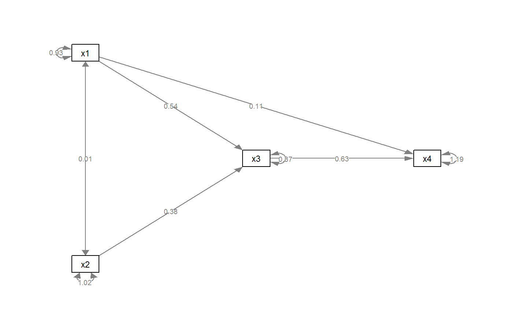

mark_sig.RdMark parameter estimates (edge labels) based on p-value.
mark_sig( semPaths_plot, object, alphas = c(`*` = 0.05, `**` = 0.01, `***` = 0.001) )
| semPaths_plot | A qgraph object generated by semPaths, or a similar qgrpah ojbect modified by other semptools functions. |
|---|---|
| object | The object used by semPaths to generate the plot. Use the same argument name used in semPaths to make the meaning of this argument obvious. |
| alphas | A named numeric vector. Each element is the cutoff (level of significance), and the name of it is the symbol to be used if p-value is less than this cutoff. The default is c("*" = .05, "**" = .01, "***" = .001). |
A qgrpah based on the original one, with marks appended to edge labels based on their p-values.
Modified a qgraph object generated by semPaths and add marks (currently asterisk, "*") to the labels based on their p-values. Require the original object used in the semPaths call.
Currently supports only plots based on lavaan output.
This function replaces the initial one, setlabels.
mod_pa <- 'x1 ~~ x2 x3 ~ x1 + x2 x4 ~ x1 + x3 ' fit_pa <- lavaan::sem(mod_pa, pa_example) lavaan::parameterEstimates(fit_pa)[, c("lhs", "op", "rhs", "est", "pvalue")]#> lhs op rhs est pvalue #> 1 x1 ~~ x2 0.005 0.957 #> 2 x3 ~ x1 0.537 0.000 #> 3 x3 ~ x2 0.376 0.000 #> 4 x4 ~ x1 0.111 0.382 #> 5 x4 ~ x3 0.629 0.000 #> 6 x3 ~~ x3 0.874 0.000 #> 7 x4 ~~ x4 1.194 0.000 #> 8 x1 ~~ x1 0.933 0.000 #> 9 x2 ~~ x2 1.017 0.000m <- matrix(c("x1", NA, NA, NA, "x3", "x4", "x2", NA, NA), byrow = TRUE, 3, 3) p_pa <- semPlot::semPaths(fit_pa, whatLabels="est", style = "ram", nCharNodes = 0, nCharEdges = 0, layout = m)if (FALSE) { # The following examples will not run because of long loading time. mod_cfa <- 'f1 =~ x01 + x02 + x03 f2 =~ x04 + x05 + x06 + x07 f3 =~ x08 + x09 + x10 f4 =~ x11 + x12 + x13 + x14 ' fit_cfa <- lavaan::sem(mod_cfa, cfa_example) lavaan::parameterEstimates(fit_cfa)[, c("lhs", "op", "rhs", "est", "pvalue")] p_cfa <- semPlot::semPaths(fit_cfa, whatLabels="est", style = "ram", nCharNodes = 0, nCharEdges = 0) p_cfa2 <- mark_sig(p_cfa, fit_cfa) plot(p_cfa2) mod_sem <- 'f1 =~ x01 + x02 + x03 f2 =~ x04 + x05 + x06 + x07 f3 =~ x08 + x09 + x10 f4 =~ x11 + x12 + x13 + x14 f3 ~ f1 + f2 f4 ~ f1 + f3 ' fit_sem <- lavaan::sem(mod_sem, sem_example) lavaan::parameterEstimates(fit_sem)[, c("lhs", "op", "rhs", "est", "pvalue")] p_sem <- semPlot::semPaths(fit_sem, whatLabels="est", style = "ram", nCharNodes = 0, nCharEdges = 0) p_sem2 <- mark_sig(p_sem, fit_sem) plot(p_sem2) }